🤔Ask:
The business task
Analyze smart device usage data in order to gain insight into how people are already using their smart devices. Then, using this information, give high-level recommendations for how these trends can inform Bellabeat marketing strategy.
How current user trends can guide marketing strategy?
The stakeholders
- Urška Sršen: Bellabeat’s cofounder and Chief Creative Officer
- Sando Mur: Mathematician and Bellabeat’s cofounder; key member of the Bellabeat executive team
- Bellabeat marketing analytics team: A team of data analysts responsible for collecting, analyzing, and reporting data that helps guide Bellabeat’s marketing strategy.
💻Prepare:
Getting the data
To answer our main question (How current user trends can guide marketing strategy?), we will use data from FitBit Fitness Tracker Data (CC0: Public Domain, dataset made available through Mobius). This Kaggle data set contains personal fitness tracker from thirty three fitbit users. These eligible Fitbit users consented to the submission of personal tracker data, including minute-level output for physical activity, heart rate, and sleep monitoring. It includes information about daily activity, steps, and heart rate that can be used to explore users’ habits.
A folder namedFitabase Data 4.12.16-5.12.16 stores 18
csv files with tracker data, including minute-level output
for physical activity, heart rate, and sleep monitoring.
To better read our files let’s create a path variable to
store the folder path containing all csv files.
import os
path = './Fitabase Data 4.12.16-5.12.16'
## Get the full path of all the csv files.
full_path_list = [os.path.join(path,f) for\
f in os.listdir(path) if os.path.isfile(os.path.join(path,f)) ]
print('available files ' + str(len(full_path_list)))## available files 18full_path_list## ['./Fitabase Data 4.12.16-5.12.16/dailyActivity_merged.csv', './Fitabase Data 4.12.16-5.12.16/dailyCalories_merged.csv', './Fitabase Data 4.12.16-5.12.16/dailyIntensities_merged.csv', './Fitabase Data 4.12.16-5.12.16/dailySteps_merged.csv', './Fitabase Data 4.12.16-5.12.16/heartrate_seconds_merged.csv', './Fitabase Data 4.12.16-5.12.16/hourlyCalories_merged.csv', './Fitabase Data 4.12.16-5.12.16/hourlyIntensities_merged.csv', './Fitabase Data 4.12.16-5.12.16/hourlySteps_merged.csv', './Fitabase Data 4.12.16-5.12.16/minuteCaloriesNarrow_merged.csv', './Fitabase Data 4.12.16-5.12.16/minuteCaloriesWide_merged.csv', './Fitabase Data 4.12.16-5.12.16/minuteIntensitiesNarrow_merged.csv', './Fitabase Data 4.12.16-5.12.16/minuteIntensitiesWide_merged.csv', './Fitabase Data 4.12.16-5.12.16/minuteMETsNarrow_merged.csv', './Fitabase Data 4.12.16-5.12.16/minuteSleep_merged.csv', './Fitabase Data 4.12.16-5.12.16/minuteStepsNarrow_merged.csv', './Fitabase Data 4.12.16-5.12.16/minuteStepsWide_merged.csv', './Fitabase Data 4.12.16-5.12.16/sleepDay_merged.csv', './Fitabase Data 4.12.16-5.12.16/weightLogInfo_merged.csv']Checking for integrity of our path list (should contain 18 file paths):
🧰Process
To clean and transform our data we will create a database using the sqlite3 module as an interface for SQLite in Python. By doing this we can use SQL queries to quickly interact with our data.
Creating the database
First of all, we need to create the database. We do this by creating a connection and starting a cursor in the desired database:
import sqlite3 as sql
con = sql.connect("fitbit.db")
cur = con.cursor()To easily insert all csv files as different tables in
our database we can create a helper function to return the name of the
csv file (without extension) to use as the table name.
def get_table_name(full_path_list, i):
'''Returns name of csv file with no extension'''
return full_path_list[i].split('/')[-1].split('.')[0]Having this we can use the pandas library to insert all
files as tables in our fitbit.db database. We do this
by first reading the file as a pandas dataframe object (using the
read_csv method) then we insert it into the database using
the to_sql method with the proper connection to the
database.
import pandas as pd
for i in range(0,18):
pd.read_csv(full_path_list[i]).to_sql(get_table_name(full_path_list, i), con, if_exists='append', index=False)## 940
## 940
## 940
## 940
## 2483658
## 22099
## 22099
## 22099
## 1325580
## 21645
## 1325580
## 21645
## 1325580
## 188521
## 1325580
## 21645
## 413
## 67The if_exists='append' argument ensures we append the
table to the existing database.
We can do a quick sanity check and use pandas again to
create a dataframe object from a simple query to the newly populated
database.
import pandas as pd
# Simple query
df = pd.read_sql(f'SELECT * FROM {get_table_name(full_path_list, 0)}', con)Now we can use the head() method to show the first 5
rows of data from the first inserted table.
df.head()## Id ActivityDate ... SedentaryMinutes Calories
## 0 1503960366 4/12/2016 ... 728 1985
## 1 1503960366 4/13/2016 ... 776 1797
## 2 1503960366 4/14/2016 ... 1218 1776
## 3 1503960366 4/15/2016 ... 726 1745
## 4 1503960366 4/16/2016 ... 773 1863
##
## [5 rows x 15 columns]Finally, we can list all tables in our data base using a SQL query:
# Listing all tables
cur.execute("SELECT name FROM sqlite_master WHERE type='table';")## <sqlite3.Cursor object at 0x7f3e67389d50>tables = cur.fetchall()
print(tables)## [('dailyActivity_merged',), ('dailyCalories_merged',), ('dailyIntensities_merged',), ('dailySteps_merged',), ('heartrate_seconds_merged',), ('hourlyCalories_merged',), ('hourlyIntensities_merged',), ('hourlySteps_merged',), ('minuteCaloriesNarrow_merged',), ('minuteCaloriesWide_merged',), ('minuteIntensitiesNarrow_merged',), ('minuteIntensitiesWide_merged',), ('minuteMETsNarrow_merged',), ('minuteSleep_merged',), ('minuteStepsNarrow_merged',), ('minuteStepsWide_merged',), ('sleepDay_merged',), ('weightLogInfo_merged',)]print(f'Total of {len(tables)} tables in database.')## Total of 18 tables in database.Checking for redundant information
We will work with the tables with daily logs of activitys. There are
a total of 5 tables with daily our Day in
their names. Let’s inspect them for redundant information.
To take a closer look at the daily data, let’s read table
dailyActivity_merged as a dataframe.
dailyActivity_df = pd.read_sql(f'SELECT * FROM dailyActivity_merged', con)
dailyActivity_df.head()## Id ActivityDate ... SedentaryMinutes Calories
## 0 1503960366 4/12/2016 ... 728 1985
## 1 1503960366 4/13/2016 ... 776 1797
## 2 1503960366 4/14/2016 ... 1218 1776
## 3 1503960366 4/15/2016 ... 726 1745
## 4 1503960366 4/16/2016 ... 773 1863
##
## [5 rows x 15 columns]We do the same for the dailyIntensities_merged
table.
dailyIntensities_df = pd.read_sql(f'SELECT * FROM dailyIntensities_merged', con)
dailyIntensities_df.head()## Id ActivityDay ... ModeratelyActiveDistance VeryActiveDistance
## 0 1503960366 4/12/2016 ... 0.55 1.88
## 1 1503960366 4/13/2016 ... 0.69 1.57
## 2 1503960366 4/14/2016 ... 0.40 2.44
## 3 1503960366 4/15/2016 ... 1.26 2.14
## 4 1503960366 4/16/2016 ... 0.41 2.71
##
## [5 rows x 10 columns]These tables appear to have shared columns. Let’s first find out if they have the same number of rows.
print(f'dailyActivity_df length: {len(dailyActivity_df)}')## dailyActivity_df length: 940print(f'dailyIntensities_df length: {len(dailyIntensities_df)}')## dailyIntensities_df length: 940The table dailyIntensities_merged seems to hold
redundant information already contained in
dailyActivity_merged. The bellow query should return empty
if all 8 columns related to Distance and Minutes of activity are
redundant between these tables.
query = """
SELECT VeryActiveDistance, ModeratelyActiveDistance, LightActiveDistance, SedentaryActiveDistance, VeryActiveMinutes,
FairlyActiveMinutes, LightlyActiveMinutes, SedentaryMinutes
FROM dailyActivity_merged
EXCEPT
SELECT VeryActiveDistance, ModeratelyActiveDistance, LightActiveDistance, SedentaryActiveDistance, VeryActiveMinutes,
FairlyActiveMinutes, LightlyActiveMinutes, SedentaryMinutes
FROM dailyIntensities_merged;
"""
cur.execute(query)## <sqlite3.Cursor object at 0x7f3e67389d50>print(cur.fetchall())## []The same ideia applies to tables dailyActivity_merged
and dailySteps_merged. Both have columns related to total
steps taken by date. In the former table this column is named
TotalSteps and in the latter, StepTotal.
Again, we can execute a EXCEPT statement to check if columns are
redundant:
query = """
SELECT TotalSteps from dailyActivity_merged
EXCEPT
SELECT StepTotal from dailySteps_merged;
"""
cur.execute(query)## <sqlite3.Cursor object at 0x7f3e67389d50>print(cur.fetchall())## []We repeat the same process for column Calories in
dailyCalories_merged:
query = """
SELECT Calories from dailyActivity_merged
EXCEPT
SELECT Calories from dailyCalories_merged;
"""
cur.execute(query)## <sqlite3.Cursor object at 0x7f3e67389d50>print(cur.fetchall())## []So, tables dailyIntensities_merged,
dailySteps_merged and dailyCalories_merged
will not be used further as all information on them is contained in
table dailyActivity_merged.
Updating table to better read date information
We can update the ActivityDate column in
dailyActivity_merged table to match the standard
YYY-MM-DD from SQLite.
- RUN THIS ONLY ONCE AT IT CHANGES THE DATABASE
update_date = """
UPDATE dailyActivity_merged set ActivityDate =
SUBSTR(ActivityDate, -4)
|| "-" ||
CASE
WHEN LENGTH(
SUBSTR( -- picking month info
ActivityDate, 1, INSTR(ActivityDate, '/') - 1
)
) > 1 THEN
SUBSTR( -- picking month info
ActivityDate, 1, INSTR(ActivityDate, '/') - 1
)
ELSE '0' ||
SUBSTR( -- picking month info
ActivityDate, 1, INSTR(ActivityDate, '/') - 1
)
END
|| "-" ||
CASE
WHEN LENGTH(
SUBSTR( -- picking day info
SUBSTR(ActivityDate, INSTR(ActivityDate, '/') + 1), -- pick substring starting after first /
1, -- start new substring at first character of newly selected substring
INSTR(SUBSTR(ActivityDate, INSTR(ActivityDate, '/') + 1), '/') - 1 -- go all the way to next /
)
) > 1 THEN
SUBSTR( -- picking day info
SUBSTR(ActivityDate, INSTR(ActivityDate, '/') + 1), -- pick substring starting after first /
1, -- start new substring at first character of newly selected substring
INSTR(SUBSTR(ActivityDate, INSTR(ActivityDate, '/') + 1), '/') - 1 -- go all the way to next /
)
ELSE '0' ||
SUBSTR( -- picking day info
SUBSTR(ActivityDate, INSTR(ActivityDate, '/') + 1), -- pick substring starting after first /
1, -- start new substring at first character of newly selected substring
INSTR(SUBSTR(ActivityDate, INSTR(ActivityDate, '/') + 1), '/') - 1 -- go all the way to next /
)
END;
"""
cur.execute(update_date)## <sqlite3.Cursor object at 0x7f3e67389d50>con.commit()
con.close()To commit the changes we use the commit() method in our
sql cursor. We can close our connection to the database and check if
tables were updated.
Data reagrding sleeping habbits
Beyond our dailyActivity_merged table, there is a
separate table holding sleep information. We can do a query to inspect
the table.
# Connect again to database
con = sql.connect("fitbit.db")
cur = con.cursor()
sleep_query = """
SELECT
*
FROM
sleepDay_merged;
"""
sleep_df = pd.read_sql(sleep_query, con)
sleep_df.head()## Id SleepDay ... TotalMinutesAsleep TotalTimeInBed
## 0 1503960366 4/12/2016 12:00:00 AM ... 327 346
## 1 1503960366 4/13/2016 12:00:00 AM ... 384 407
## 2 1503960366 4/15/2016 12:00:00 AM ... 412 442
## 3 1503960366 4/16/2016 12:00:00 AM ... 340 367
## 4 1503960366 4/17/2016 12:00:00 AM ... 700 712
##
## [5 rows x 5 columns]Updating the day to match SQLite format YYYY-MM-DD
(execute only once):
update_date = """
UPDATE sleepDay_merged set SleepDay =
SUBSTR(SUBSTR(SleepDay, 1, LENGTH(SleepDay) - 12), -4)
|| "-" ||
CASE
WHEN LENGTH(
SUBSTR( -- picking month info
SUBSTR(SleepDay, 1, LENGTH(SleepDay) - 12), 1, INSTR(SUBSTR(SleepDay, 1, LENGTH(SleepDay) - 12), '/') - 1
)
) > 1 THEN
SUBSTR( -- picking month info
SUBSTR(SleepDay, 1, LENGTH(SleepDay) - 12), 1, INSTR(SUBSTR(SleepDay, 1, LENGTH(SleepDay) - 12), '/') - 1
)
ELSE '0' ||
SUBSTR( -- picking month info
SUBSTR(SleepDay, 1, LENGTH(SleepDay) - 12), 1, INSTR(SUBSTR(SleepDay, 1, LENGTH(SleepDay) - 12), '/') - 1
)
END
|| "-" ||
CASE
WHEN LENGTH(
SUBSTR( -- picking day info
SUBSTR(SUBSTR(SleepDay, 1, LENGTH(SleepDay) - 12), INSTR(SUBSTR(SleepDay, 1, LENGTH(SleepDay) - 12), '/') + 1), -- pick substring starting after first /
1, -- start new substring at first character of newly selected substring
INSTR(SUBSTR(SUBSTR(SleepDay, 1, LENGTH(SleepDay) - 12), INSTR(SUBSTR(SleepDay, 1, LENGTH(SleepDay) - 12), '/') + 1), '/') - 1 -- go all the way to next /
)
) > 1 THEN
SUBSTR( -- picking day info
SUBSTR(SUBSTR(SleepDay, 1, LENGTH(SleepDay) - 12), INSTR(SUBSTR(SleepDay, 1, LENGTH(SleepDay) - 12), '/') + 1), -- pick substring starting after first /
1, -- start new substring at first character of newly selected substring
INSTR(SUBSTR(SUBSTR(SleepDay, 1, LENGTH(SleepDay) - 12), INSTR(SUBSTR(SleepDay, 1, LENGTH(SleepDay) - 12), '/') + 1), '/') - 1 -- go all the way to next /
)
ELSE '0' ||
SUBSTR( -- picking day info
SUBSTR(SUBSTR(SleepDay, 1, LENGTH(SleepDay) - 12), INSTR(SUBSTR(SleepDay, 1, LENGTH(SleepDay) - 12), '/') + 1), -- pick substring starting after first /
1, -- start new substring at first character of newly selected substring
INSTR(SUBSTR(SUBSTR(SleepDay, 1, LENGTH(SleepDay) - 12), INSTR(SUBSTR(SleepDay, 1, LENGTH(SleepDay) - 12), '/') + 1), '/') - 1 -- go all the way to next /
)
END;
"""
cur.execute(update_date)## <sqlite3.Cursor object at 0x7f3e628328f0>con.commit()
con.close()con = sql.connect("fitbit.db")
cur = con.cursor()Now we can check if the updates are correct:
- For the sleep table:
sleep_query = """
SELECT *,
STRFTIME('%w',SleepDay) dow
FROM sleepDay_merged;
"""
sleep_df = pd.read_sql(sleep_query, con)
sleep_df.head()## Id SleepDay ... TotalTimeInBed dow
## 0 1503960366 2016-04-12 ... 346 2
## 1 1503960366 2016-04-13 ... 407 3
## 2 1503960366 2016-04-15 ... 442 5
## 3 1503960366 2016-04-16 ... 367 6
## 4 1503960366 2016-04-17 ... 712 0
##
## [5 rows x 6 columns]The date now is in the proper YYYY-MM-DD format.
- For the activity table:
dailyActivity_df = pd.read_sql('SELECT * FROM dailyActivity_merged', con)
dailyActivity_df.head()## Id ActivityDate ... SedentaryMinutes Calories
## 0 1503960366 2016-04-12 ... 728 1985
## 1 1503960366 2016-04-13 ... 776 1797
## 2 1503960366 2016-04-14 ... 1218 1776
## 3 1503960366 2016-04-15 ... 726 1745
## 4 1503960366 2016-04-16 ... 773 1863
##
## [5 rows x 15 columns]Again, the dates are now in the proper format.
As was done in the sleep dataframe, we can use the function
STRFTIME() from SQLite to extract information on the day,
month, year and day of the week (dow) from the formated
dates:
full_info_activity = """
SELECT *,
STRFTIME('%d',ActivityDate) day,
STRFTIME('%m',ActivityDate) month,
STRFTIME('%Y',ActivityDate) year,
STRFTIME('%w',ActivityDate) dow
FROM dailyActivity_merged;
"""
full_dailyActivity_df = pd.read_sql(full_info_activity, con)
full_dailyActivity_df.head()## Id ActivityDate TotalSteps TotalDistance ... day month year dow
## 0 1503960366 2016-04-12 13162 8.50 ... 12 04 2016 2
## 1 1503960366 2016-04-13 10735 6.97 ... 13 04 2016 3
## 2 1503960366 2016-04-14 10460 6.74 ... 14 04 2016 4
## 3 1503960366 2016-04-15 9762 6.28 ... 15 04 2016 5
## 4 1503960366 2016-04-16 12669 8.16 ... 16 04 2016 6
##
## [5 rows x 19 columns]We saved the resulting query in a larger dataframe named
full_dailyActivity_df. The first 5 rows of this dataframe
are as follows.
🧑🏻💻Analyze
Creating usefull dataframes
To ease our analyses further down the road, we can use our updated tables to create helper dataframes.
First, a sanity check on our daily activity table:
# Different users
cur.execute("SELECT COUNT(DISTINCT Id) FROM dailyActivity_merged;")## <sqlite3.Cursor object at 0x7f3e67389d50>print('Different users: ', cur.fetchall()[0][0])## Different users: 33Data on Average Calories, Steps and Distance by Id and by day of the week
# Average Calories, Steps and Distance by Id and by day of the week
query = """
SELECT
Id,
STRFTIME('%w', ActivityDate) dow,
ROUND(AVG(Calories),2) AS avg_calories,
ROUND(AVG(TotalSteps),2) AS avg_steps,
ROUND(AVG(TotalDistance),2) AS avg_distance
FROM dailyActivity_merged
GROUP BY Id, STRFTIME('%w', ActivityDate);
"""
activity_dist = pd.read_sql(query, con)
activity_dist.head()## Id dow avg_calories avg_steps avg_distance
## 0 1503960366 0 1769.00 10101.50 6.57
## 1 1503960366 1 1939.25 13780.75 8.96
## 2 1503960366 2 1967.80 13946.60 8.92
## 3 1503960366 3 1868.80 12656.60 8.23
## 4 1503960366 4 1481.60 9500.60 6.10“Boolean” column to check if date corresponds to weekend
weekend_query = """
SELECT
Id,
ActivityDate,
SedentaryMinutes,
VeryActiveMinutes,
FairlyActiveMinutes,
LightlyActiveMinutes,
Calories,
TotalSteps,
TotalDistance,
CASE
WHEN STRFTIME('%w',ActivityDate) IN ('0','6')
THEN 1
ELSE 0
END weekend
FROM dailyActivity_merged;
"""
weekend_check = pd.read_sql(weekend_query, con)
weekend_check.head()## Id ActivityDate ... TotalDistance weekend
## 0 1503960366 2016-04-12 ... 8.50 0
## 1 1503960366 2016-04-13 ... 6.97 0
## 2 1503960366 2016-04-14 ... 6.74 0
## 3 1503960366 2016-04-15 ... 6.28 0
## 4 1503960366 2016-04-16 ... 8.16 1
##
## [5 rows x 10 columns]NOTE: day of week 0-6 with Sunday==0
Joining activity data with sleep data
join_query = """
SELECT
A.Id,
A.ActivityDate,
A.SedentaryMinutes,
A.LightlyActiveMinutes,
S.TotalMinutesAsleep
FROM
dailyActivity_merged A
INNER JOIN sleepDay_merged S
ON
A.Id = S.Id AND
A.ActivityDate = S.SleepDay;
"""
activity_sleep_df = pd.read_sql(join_query, con)
activity_sleep_df.head()## Id ActivityDate ... LightlyActiveMinutes TotalMinutesAsleep
## 0 1503960366 2016-04-12 ... 328 327
## 1 1503960366 2016-04-13 ... 217 384
## 2 1503960366 2016-04-15 ... 209 412
## 3 1503960366 2016-04-16 ... 221 340
## 4 1503960366 2016-04-17 ... 164 700
##
## [5 rows x 5 columns]Initial exploratory visualizations
How users spend their activity time?
In our dailyActivity_df there are four measures of how
users spend their time: * VeryActiveMinutes that lead to
VeryActiveDistance * FairlyActiveMinutes that
lead to ModeratelyActiveDistance *
VeryLightlyActiveMinutes that lead to
LightActiveDistance * SedentaryMinutes that
lead to SedentaryActiveDistance
We can plot each pair in a scatter plot (Distance vs. Minutes) with a regression line to get estimate of the speed of users during these activities. To ease the comparison, we’ll plot all four graphs with shared y-scale.
import matplotlib.pyplot as plt
import seaborn as sns
sns.set(rc={'figure.figsize': (10, 6)})
sns.set_style('whitegrid')
sns.set_palette('Set2')
fig, axes = plt.subplots(1, 4, figsize=(15, 5), sharey=True)
fig.suptitle('Distance per Minutes given kind of Activity')
sns.regplot(data = dailyActivity_df, x = 'VeryActiveMinutes', y = 'VeryActiveDistance', ax=axes[0])
axes[0].set_xlim([0,500])## (0.0, 500.0)sns.regplot(data = dailyActivity_df, x = 'FairlyActiveMinutes', y = 'ModeratelyActiveDistance', ax=axes[1])
axes[1].set_xlim([0,500])## (0.0, 500.0)sns.regplot(data = dailyActivity_df, x = 'LightlyActiveMinutes', y = 'LightActiveDistance', ax=axes[2])
axes[2].set_xlim([0,500])## (0.0, 500.0)sns.regplot(data = dailyActivity_df, x = 'SedentaryMinutes', y = 'SedentaryActiveDistance', ax=axes[3])
axes[3].set_xlim([0,500]);
plt.show()
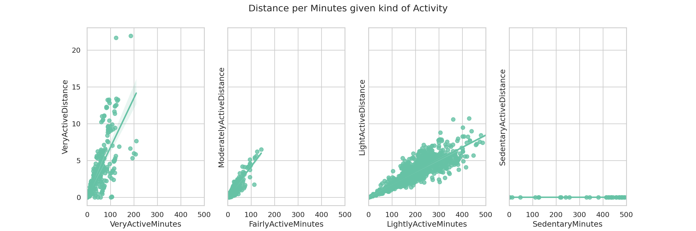
VeryActive distances are traveled in shorter times (that is, they have larger speeds represented by steeper regression lines). FairlyActiveMinutes and LightlyActiveMinutes follow in speed. It would be interesting to know how this classification is done to actually understand the difference between “Light” activities and “Moderate” activities.
How does the number of steps taken in a day affect the amount of calories burned?
sns.regplot(data = full_dailyActivity_df, x= 'TotalSteps', y ='Calories');
plt.show()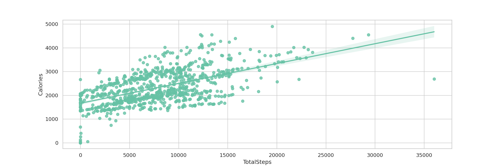
Once more, as expected the amount of calories burned in a day grows as the user takes more steps. An inetersting fact is that the intercept of the regression line represents the amount of burned calories in a day with no steps taken. This is the amount of calories users are burning in a very sedentary day. According to the Healthline site, this number corresponds to the basal metabolic rate:
Your basal metabolic rate (BMR), on the other hand, represents the number of calories you individually burn a day at rest, or while you’re sedentary. This includes sleeping and sitting.
This value can be calculated (again referring to Healthline) if we know the user’s sex, weight, height and age. In their own calculations, a 35-year-old man who weighs 175 pounds and is 5 feet 11 inches would have a BMR of 1,816 calories and a 35-year-old woman who weighs 135 pounds and is 5 feet, 5 inches would have a BMR of 1,383 calories.
To compare these estimates with our data, we can get the intercept value using the scikit-learn package. First of all, we’ll do the necessary imports.
import numpy as np
import sklearn
import sklearn.linear_model
# impor
from sklearn.linear_model import LinearRegressionNow we define our inputs (X) and outputs
(y) for the regression. This should be arrays so we take
the .values from our dataframes:
X = full_dailyActivity_df['TotalSteps'].values.reshape((-1, 1))
y = full_dailyActivity_df['Calories'].valuesWe call .reshape() on X because this array
is required to be two-dimensional, or to be more precise, to have one
column and as many rows as necessary. That’s exactly what the argument
(-1, 1) of .reshape() specifies.
Next, we instantiate the model and fit it to the data
model = LinearRegression()
model.fit(X, y)LinearRegression()In a Jupyter environment, please rerun this cell to show the HTML representation or trust the notebook.
On GitHub, the HTML representation is unable to render, please try loading this page with nbviewer.org.
LinearRegression()
With the fitted model, we can get the intercept value and the slope as follows.
print('intercept:', model.intercept_)## intercept: 1665.7426768758337print('slope:', model.coef_)## slope: [0.08351327]With these, we would like to draw the regression line in the same
figure as the scatter plot for our data and see if the fit is similar to
that obtained with seaborn’s regplot. To actually draw the line, we
define a abline function to use matplotlib to draw a line
in 2D space from the slope and intercept.
def abline(slope, intercept):
"""Plot a line from slope and intercept"""
axes = plt.gca()
x_vals = np.array(axes.get_xlim())
y_vals = intercept + slope * x_vals
plt.plot(x_vals, y_vals, color= 'r', ls = '--')
plt.show()
sns.scatterplot(data = full_dailyActivity_df, x= 'TotalSteps', y ='Calories')
abline(model.coef_, model.intercept_);
plt.show()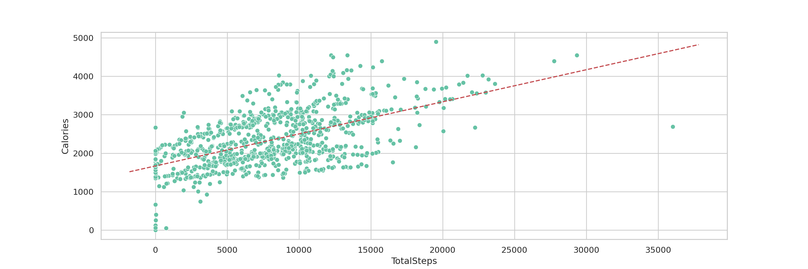
That looks good! And, from our user data we see that the predicted
BMR is ~1665.74 (between those predicted for the 35-year-old
woman and man). We can further get information on the BMR of
our users if we filter only the data points with zero steps taken and
get the statistics on the Calories distribution. This can be done with
the describe method from pandas along with the
mask for only TotalSteps = 0.
full_dailyActivity_df[full_dailyActivity_df['TotalSteps']==0]['Calories'].describe()## count 77.000000
## mean 1657.077922
## std 557.082290
## min 0.000000
## 25% 1496.000000
## 50% 1841.000000
## 75% 1980.000000
## max 2664.000000
## Name: Calories, dtype: float64full_dailyActivity_df[full_dailyActivity_df['Calories']==0]## Id ActivityDate TotalSteps TotalDistance ... day month year dow
## 30 1503960366 2016-05-12 0 0.0 ... 12 05 2016 4
## 653 6290855005 2016-05-10 0 0.0 ... 10 05 2016 2
## 817 8253242879 2016-04-30 0 0.0 ... 30 04 2016 6
## 879 8583815059 2016-05-12 0 0.0 ... 12 05 2016 4
##
## [4 rows x 19 columns]We see that the minimum is 0 (seems like an outlier since 0 calories burned in a day is impossible) and the maximum is 2664. We can also see some quartiles along with mean and standard deviation.
Let’s inspect the possible outliers:
In SQL: we can have this same output using SQL:
query = """
SELECT *,
STRFTIME('%d',ActivityDate) day,
STRFTIME('%m',ActivityDate) month,
STRFTIME('%Y',ActivityDate) year,
STRFTIME('%w',ActivityDate) dow
FROM
dailyActivity_merged
WHERE
Calories = 0;
"""
outliers_calories = pd.read_sql(query, con)
outliers_calories## Id ActivityDate TotalSteps TotalDistance ... day month year dow
## 0 1503960366 2016-05-12 0 0.0 ... 12 05 2016 4
## 1 6290855005 2016-05-10 0 0.0 ... 10 05 2016 2
## 2 8253242879 2016-04-30 0 0.0 ... 30 04 2016 6
## 3 8583815059 2016-05-12 0 0.0 ... 12 05 2016 4
##
## [4 rows x 19 columns]There are 4 rows with all zero values except for the
SedentaryMinutes column. In this column we see that users
spent 1440 minutes of sedentary activity in a single day. That’s the
whole day (!): 1440minutes divided by 60minutes/hour = 24h. So, it seems
the tracker may have been turned off the entire day our experience some
malfunction. We should get rid of these data points in further
analysis.
We redefine our full_dailyActivity_df dropping the
outliers:
full_info_activity = """
SELECT *,
STRFTIME('%d',ActivityDate) day,
STRFTIME('%m',ActivityDate) month,
STRFTIME('%Y',ActivityDate) year,
STRFTIME('%w',ActivityDate) dow
FROM
dailyActivity_merged
WHERE
Calories <> 0;
"""
full_dailyActivity_df = pd.read_sql(full_info_activity, con)
len(full_dailyActivity_df)
## 936Our data frame is now 936 rows long, given we dropped the four outliers. We can now see if these made a difference in the regression parameters. To simplify our flow, let’s turn the regression process into a single function:
def get_regression(full_dailyActivity_df, x ='TotalSteps', y = 'Calories'):
X = full_dailyActivity_df[x].values.reshape((-1, 1))
y = full_dailyActivity_df[y].values
model = LinearRegression()
model.fit(X, y)
print('intercept:', model.intercept_)
print('slope:', model.coef_)
sns.scatterplot(data = full_dailyActivity_df, x= x, y =y)
# plt.title('Calories burned by number of steps taken')
abline(model.coef_, model.intercept_);
plt.show()
return (model.intercept_, model.coef_)
get_regression(full_dailyActivity_df) ## intercept: 1689.1510000144012
## slope: [0.08138959]
## (1689.1510000144012, array([0.08138959]))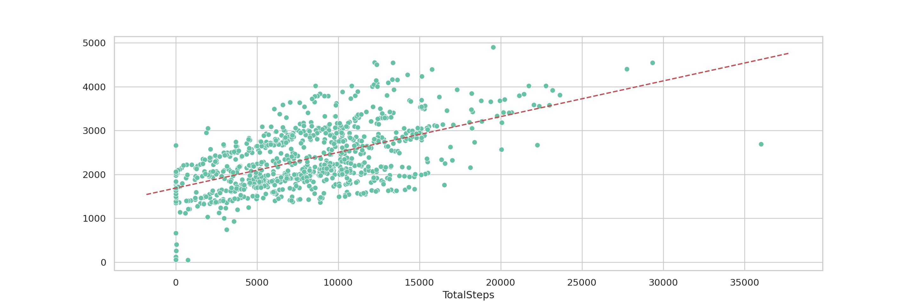
Wihtout the outliers, our fit has a slightly higher intercept of ~1689.15 (correspondong to the BMR).
Distribution according to type of activity
Excluding SedentaryMinutes, all users spend their daily
time between three types of activities: * VeryActiveMinutes
FairlyActiveMinutes
VeryLightlyActiveMinutes
We can use histograms to check how are this minutes distributed accross users:
fig, axes = plt.subplots(1, 3, figsize=(22, 5))
fig.suptitle('Distribution according to activity type')
sns.histplot(data = full_dailyActivity_df, x = 'VeryActiveMinutes', ax = axes[0]);
sns.histplot(data = full_dailyActivity_df, x = 'FairlyActiveMinutes', ax = axes[1]);
sns.histplot(data = full_dailyActivity_df, x = 'LightlyActiveMinutes', ax = axes[2]);
plt.show()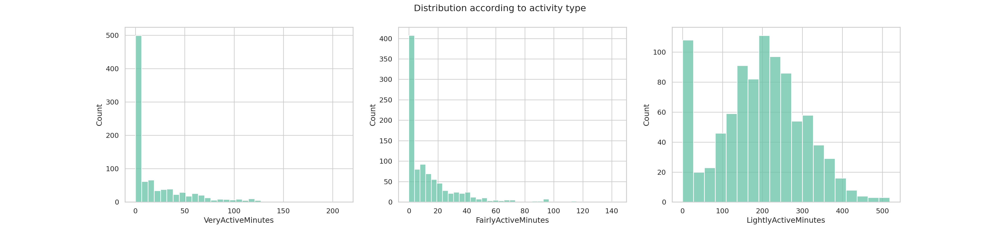
We can see from these plots that a great number of users (over 400)
spend very few minutes as Very or Fairly Active. The distribution of
LightlyActiveMinutes on the other hand is very symmetrical
exluding the very low minutes.
There is an issue here, however: it is not clear if all users were
using the tracker during the entire day in the analysed period. If a
user logs the whole day, then the sum
VeryActiveMinutes + FairlyActiveMinutes + LightlyActiveMinutes + SedentaryMinutes
should equal 1440 (the total number of minutes in a day).
Let’s use SQL to select only those points where this condition is true:
full_day_activity = """
SELECT *,
STRFTIME('%d',ActivityDate) day,
STRFTIME('%m',ActivityDate) month,
STRFTIME('%Y',ActivityDate) year,
STRFTIME('%w',ActivityDate) dow,
VeryActiveMinutes+FairlyActiveMinutes+LightlyActiveMinutes+SedentaryMinutes AS TotalMinutes
FROM
dailyActivity_merged
WHERE
Calories <> 0 AND
TotalMinutes = 1440;
"""
logged_day_df = pd.read_sql(full_day_activity, con)
logged_day_df.head()
## Id ActivityDate TotalSteps ... year dow TotalMinutes
## 0 1503960366 2016-04-14 10460 ... 2016 4 1440
## 1 1503960366 2016-04-18 13019 ... 2016 1 1440
## 2 1503960366 2016-04-22 12764 ... 2016 5 1440
## 3 1503960366 2016-04-27 18134 ... 2016 3 1440
## 4 1503960366 2016-05-04 11100 ... 2016 3 1440
##
## [5 rows x 20 columns]print(f'There are {len(logged_day_df)} rows where users logged the whole day.')## There are 474 rows where users logged the whole day.We can, now, see the distributions in these rows:
fig, axes = plt.subplots(1, 3, figsize=(22, 5))
fig.suptitle('Distribution according to activity type - Entire day logged')
sns.histplot(data = logged_day_df, x = 'VeryActiveMinutes', ax = axes[0]);
sns.histplot(data = logged_day_df, x = 'FairlyActiveMinutes', ax = axes[1]);
sns.histplot(data = logged_day_df, x = 'LightlyActiveMinutes', ax = axes[2]);
plt.show()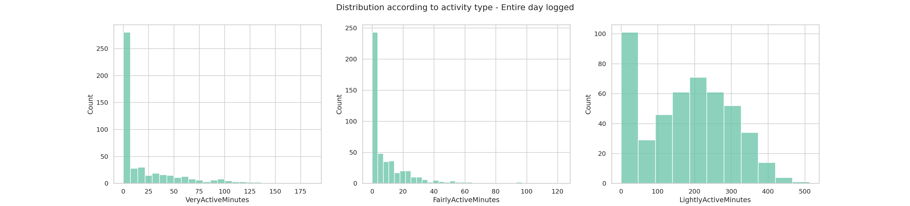
The behaviour here is similar. Let’s see what happens to the days when users did not logged the 24h:
not_full_day = """
SELECT *,
STRFTIME('%d',ActivityDate) day,
STRFTIME('%m',ActivityDate) month,
STRFTIME('%Y',ActivityDate) year,
STRFTIME('%w',ActivityDate) dow,
VeryActiveMinutes+FairlyActiveMinutes+LightlyActiveMinutes+SedentaryMinutes AS TotalMinutes
FROM
dailyActivity_merged
WHERE
Calories <> 0 AND
TotalMinutes <> 1440;
"""
not_logged_day_df = pd.read_sql(not_full_day, con)
not_logged_day_df.head() ## Id ActivityDate TotalSteps ... year dow TotalMinutes
## 0 1503960366 2016-04-12 13162 ... 2016 2 1094
## 1 1503960366 2016-04-13 10735 ... 2016 3 1033
## 2 1503960366 2016-04-15 9762 ... 2016 5 998
## 3 1503960366 2016-04-16 12669 ... 2016 6 1040
## 4 1503960366 2016-04-17 9705 ... 2016 0 761
##
## [5 rows x 20 columns]print(f'There are {len(not_logged_day_df)} rows where users logged parts of the day.')
## There are 462 rows where users logged parts of the day.fig, axes = plt.subplots(1, 3, figsize=(22, 5))
fig.suptitle('Distribution according to activity type - Partial day logged')
sns.histplot(data = not_logged_day_df, x = 'VeryActiveMinutes', ax = axes[0]);
sns.histplot(data = not_logged_day_df, x = 'FairlyActiveMinutes', ax = axes[1]);
sns.histplot(data = not_logged_day_df, x = 'LightlyActiveMinutes', ax = axes[2]);
plt.show()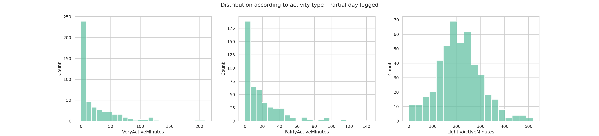
Ok, now we see a difference! The LightlyActiveMinutes
distribution is very symmetric with no peak at very few minutes of
activity. Users who log the entire day may end up registering a lot of
LightlyActiveMinutes while those who log only a part of the
day might be registering only activities with higher demand.
Let’s see the distribution of total logged time in this second group.
sns.histplot(data = not_logged_day_df, x = 'TotalMinutes');
plt.show()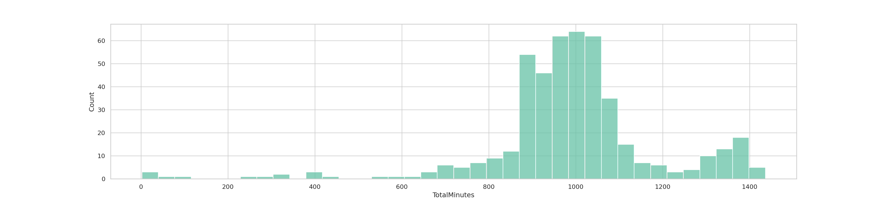
Sleeping habits and week day distributions
We can use histograms again to see the distribution of sleeping time for all users.
sns.histplot(data = sleep_df, x = 'TotalMinutesAsleep');
plt.show()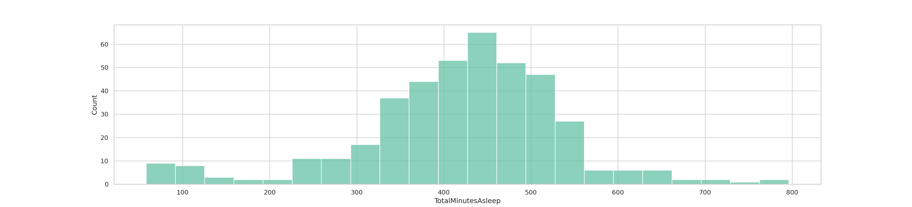
According to the CDC an adult should get 7 or more hours of sleep per day. This corresponds to 420 minutes. We can plot a line at this value to see how the users do against this recommendation.
sns.histplot(data = sleep_df, x = 'TotalMinutesAsleep')
plt.axvline(420, 0, 65, color='red');
plt.show()The distribution is somewhat symmetric with 231 rows to the right of the line (including the line) and 182 rows to the left.
We can further inspect the distribution of minutes asleep per week day:
sns.boxplot(x="dow", y="TotalMinutesAsleep", data=sleep_df,
order = ['0','1','2','3','4','5','6']);
plt.show() 
We can order this plot by the day of the week:
sns.boxplot(x="dow", y="TotalMinutesAsleep", data=sleep_df,
order = ['0','1','2','3','4','5','6']);
plt.show() 
There is no clear distinction between the days of the week. However
we can see that sunday has the largest median for
TotalMinutesAsleep and saturday appears to be the most
spread oout distribution.
While we are looking at distributions across days of the week, we can
use our activity_dist dataframe to inspect the average
values of steps, calories and distances:
fig, axes = plt.subplots(1, 3, figsize=(22, 5))
fig.suptitle('Distribution of average values across days of the week')
sns.boxplot(x="dow", y="avg_steps", data=activity_dist, ax=axes[0]);
sns.boxplot(x="dow", y="avg_calories", data=activity_dist, ax=axes[1]);
sns.boxplot(x="dow", y="avg_distance", data=activity_dist, ax=axes[2]);
plt.show()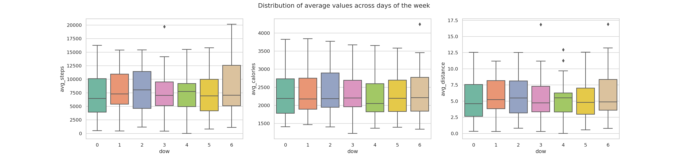
Distribution of calories and distance
fig, axes = plt.subplots(1, 2, figsize=(22, 5))
fig.suptitle('Distribution of average values across days of the week')
sns.histplot(data=full_dailyActivity_df, x="Calories", ax = axes[0]);
sns.histplot(data=full_dailyActivity_df, x="TotalDistance", ax = axes[1]);
plt.show()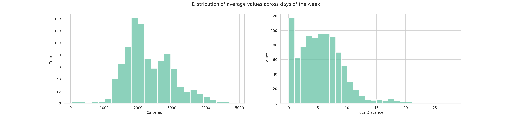
The distribution of burned calories is a bit skewed to the low calories while the distance distribtion is higly skewed to lower distances.
How does sedentary minutes change in weekends?
First of all, not considering the day of the week, let’s take a look
at the distribtuion of SedentaryMinutes:
sns.histplot(data = weekend_check, x = 'SedentaryMinutes');
plt.show()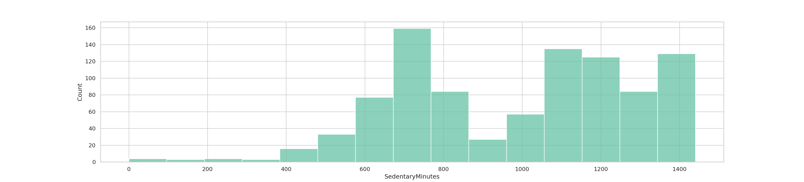
To get a visual on how this distribution depends on weekends we can
use our weekend_check dataframe and use a facetplot to see
two graphs (for weekend being true or false). Besides this, I’ll
normalize the distributions so we can compare both graphs (because there
a lot fewer weekends than week days - sadly…).
g = sns.FacetGrid(data = weekend_check, col="weekend", height=6, aspect=.7)
g.map(sns.histplot, "SedentaryMinutes", kde=True, stat='density');
plt.show()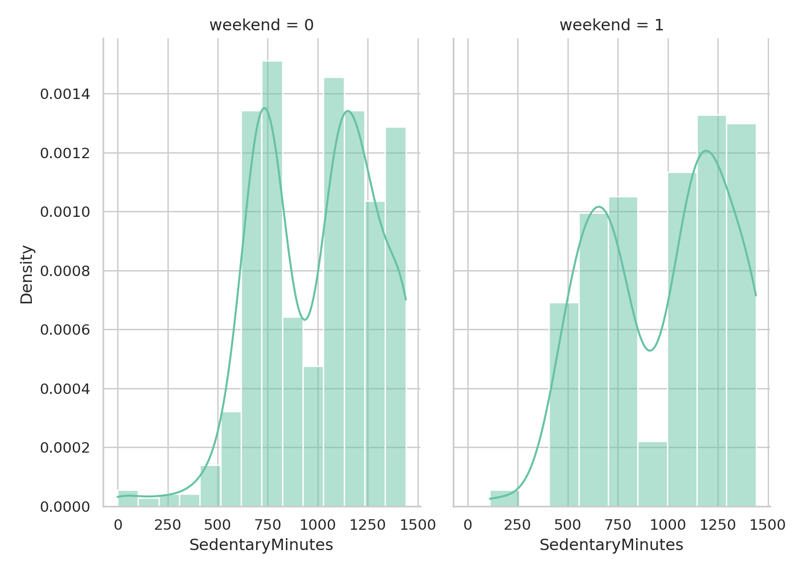
It seems there are two groups of users based on the distribution of
SedentaryMinutes. We can do a query to get the average
SedentaryMinutes per user:
query = """
SELECT
Id,
AVG(SedentaryMinutes) AS AvgSedentaryMinutes
FROM
dailyActivity_merged
GROUP BY
Id
ORDER BY
AvgSedentaryMinutes DESC;
"""
avg_sed_minutes = pd.read_sql(query, con)
avg_sed_minutes## Id AvgSedentaryMinutes
## 0 1927972279 1317.419355
## 1 6775888955 1299.423077
## 2 8253242879 1287.368421
## 3 8583815059 1267.225806
## 4 1624580081 1257.741935
## 5 4020332650 1237.258065
## 6 2320127002 1220.096774
## 7 4057192912 1217.250000
## 8 1844505072 1206.612903
## 9 6290855005 1193.034483
## 10 1644430081 1161.866667
## 11 8053475328 1148.000000
## 12 8877689391 1112.870968
## 13 2022484408 1112.580645
## 14 2873212765 1097.193548
## 15 4558609924 1093.612903
## 16 3372868164 1077.550000
## 17 8792009665 1060.482759
## 18 7007744171 1055.346154
## 19 7086361926 850.451613
## 20 1503960366 848.161290
## 21 4388161847 836.677419
## 22 4445114986 829.903226
## 23 6117666160 796.285714
## 24 4702921684 766.419355
## 25 5577150313 754.433333
## 26 4319703577 735.806452
## 27 8378563200 716.129032
## 28 3977333714 707.533333
## 29 2026352035 689.419355
## 30 2347167796 687.166667
## 31 5553957443 668.354839
## 32 6962181067 662.322581A bar plot will be nice to visually see this numbers:
sns.barplot(data = avg_sed_minutes,
x = 'Id', y = 'AvgSedentaryMinutes',
order=avg_sed_minutes.sort_values('AvgSedentaryMinutes',ascending = True)['Id'])
plt.xticks(rotation=70);
plt.show()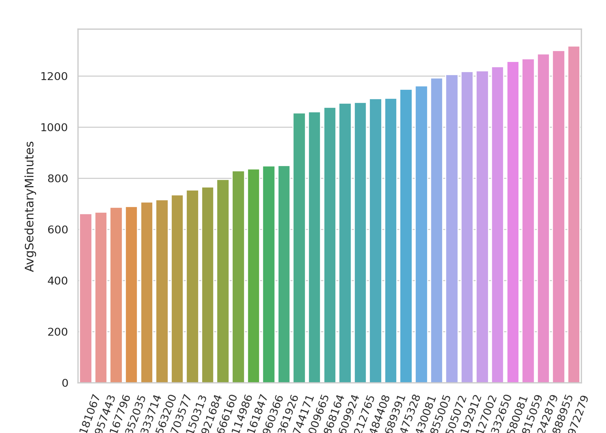
The average SedentaryMinutes is given by:
cur.execute("SELECT AVG(SedentaryMinutes) FROM dailyActivity_merged;")## <sqlite3.Cursor object at 0x7f3e67389d50>sedMinAvg = cur.fetchall()[0][0]
print(sedMinAvg)## 991.2106382978724We can create a column to identify this user group. We’ll call group
1 those with SedentaryMinutes above average and group 0,
those bellow.
def is_above(user):
'''Returns 1 if user has average SedentaryMinutes above the total average and 0 otherwise'''
return int(avg_sed_minutes[avg_sed_minutes['Id']==user]['AvgSedentaryMinutes'].values[0] > sedMinAvg)
weekend_check['UserGroup'] = weekend_check['Id'].apply(is_above)
# Rows in each group
print(f'Rows in group 0 (Less Sedentary group):')## Rows in group 0 (Less Sedentary group):print(len(weekend_check[weekend_check['UserGroup']==0]))## 416print(f'Rows in group 1 (More Sedentary group):')## Rows in group 1 (More Sedentary group):print(len(weekend_check[weekend_check['UserGroup']==1]))
#Distinct users in each group## 524print('Distinct users in group 0 (Less Sedentary group)')## Distinct users in group 0 (Less Sedentary group)print(weekend_check[weekend_check['UserGroup']==0]['Id'].nunique())## 14print('Distinct users in group 1 (More Sedentary group)')## Distinct users in group 1 (More Sedentary group)print(weekend_check[weekend_check['UserGroup']==1]['Id'].nunique())
## 19print('Using a boxplot we can clearly see the difference of these groups:')## Using a boxplot we can clearly see the difference of these groups:sns.boxplot(x="UserGroup", y="SedentaryMinutes", data=weekend_check);
plt.show()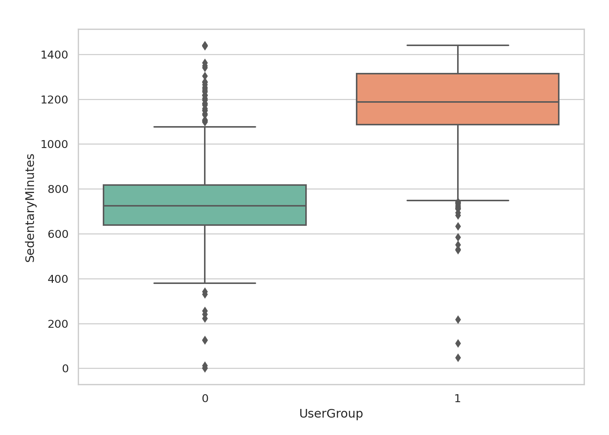
sns.countplot(data=weekend_check, x = 'UserGroup');
plt.show()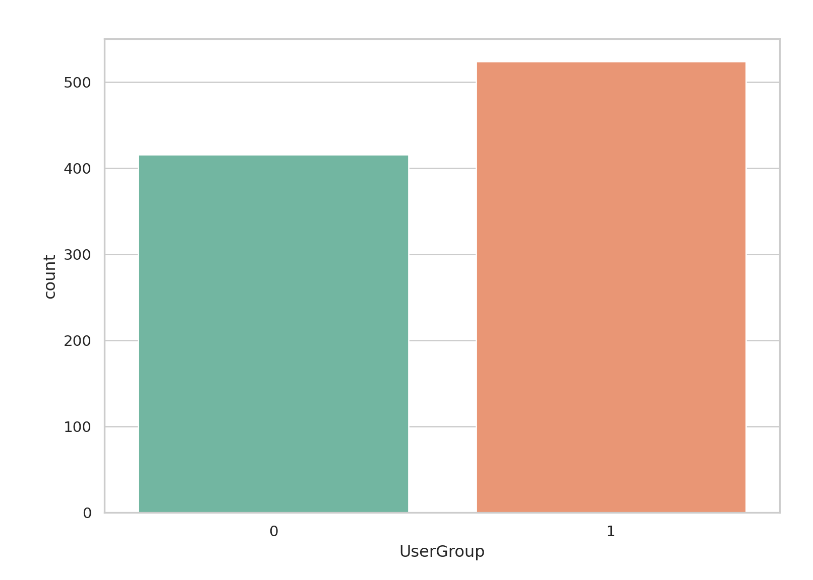
Group 1 is the more sedentary one as it has a higher median for the
SedentaryMinutes distribution.
Does this behaviour persist on weekends?
sns.boxplot(x="UserGroup", y="SedentaryMinutes", hue = 'weekend', data=weekend_check);
plt.show()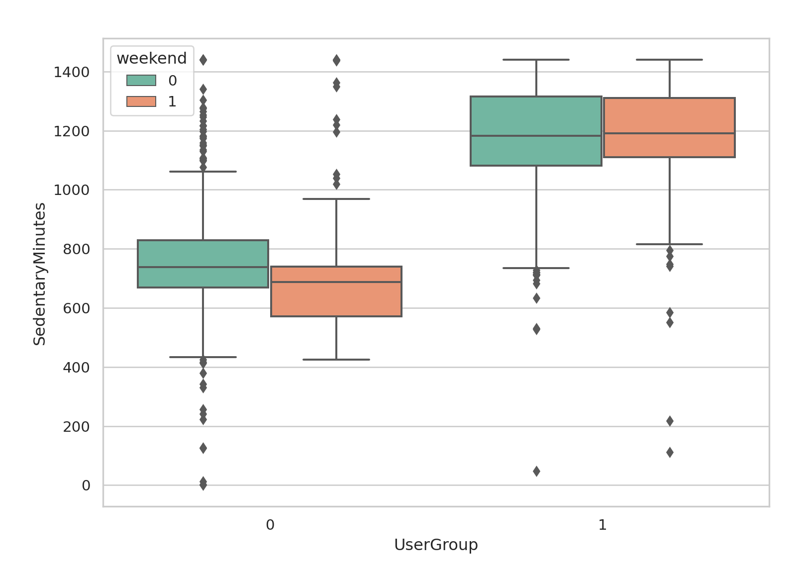
For the less sedentary group, is there a difference in the shape of the distribution on weekends?
g = sns.FacetGrid(weekend_check[weekend_check['UserGroup']==0], col="weekend", height=6, aspect=.7)
g.map(sns.histplot, "SedentaryMinutes", kde=True, stat='density');
plt.show()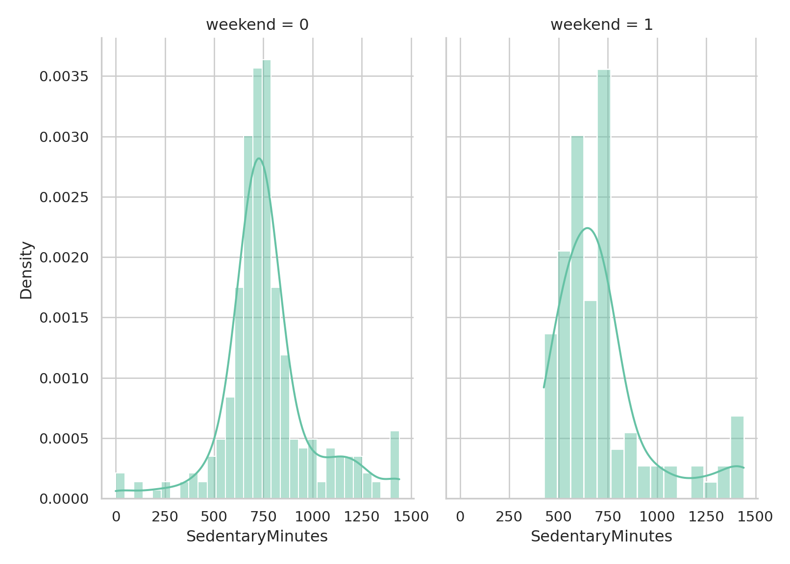
During weekends the distribution of sedentary minutes is a bit more skewed to the lower numbers, so users may be more active during weekends (makes sense since during the week there is probably a lot of sitting down and working…).
Do average values change on weekends?
To inspect how does sedentary minutes, calories, steps and distance change during the weekend we’ll do a trick with temp tables (there is probably a better way, but is the one that worked first for me…).
Steps to our analysis: * Create a temp table to include a weekend boolean column * Get the averages of queried columns in the temp table using a GROUP BY statement.
# Create temporary table for weekend column
temp_query = """
CREATE TEMP TABLE weekendTable
AS
SELECT
SedentaryMinutes,
Calories,
TotalSteps,
TotalDistance,
CASE
WHEN STRFTIME('%w',ActivityDate) IN ('0','6')
THEN 1
ELSE 0
END weekend
FROM dailyActivity_merged
-- Created temp table to check for weekends on weekend column
"""
cur.execute(temp_query)
# Get averages from SQL GROUP BY statement## <sqlite3.Cursor object at 0x7f3e67389d50>avg_query = """
SELECT
weekend,
AVG(SedentaryMinutes),
AVG(Calories),
AVG(TotalSteps),
AVG(TotalDistance)
FROM weekendTable
GROUP BY weekend;
"""
weekend_avgs = pd.read_sql(avg_query, con)
weekend_avgs## weekend AVG(SedentaryMinutes) ... AVG(TotalSteps) AVG(TotalDistance)
## 0 0 996.181295 ... 7668.699281 5.505108
## 1 1 977.110204 ... 7550.571429 5.446000
##
## [2 rows x 5 columns]Sleeping habits for each user group
sleep_df['UserGroup'] = sleep_df['Id'].apply(is_above)
sns.boxplot(x="UserGroup", y="TotalMinutesAsleep", data=sleep_df);
plt.show()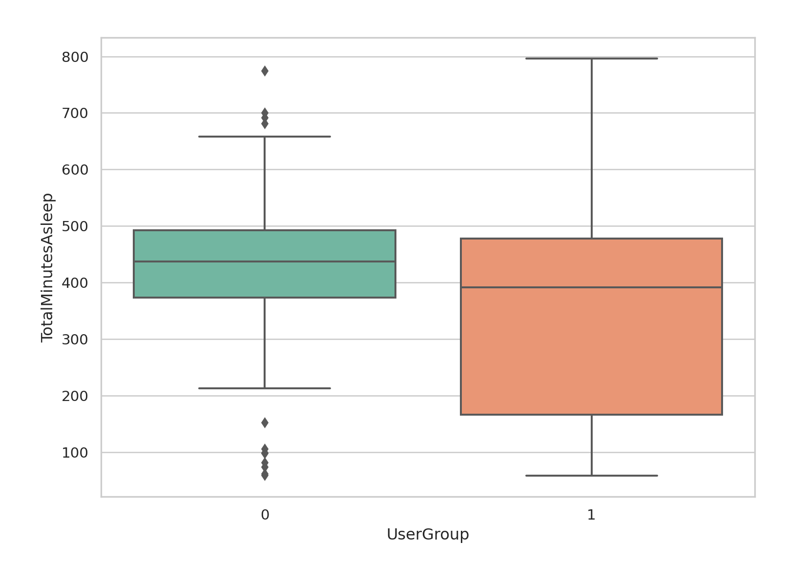
sns.countplot(data = sleep_df, x = 'UserGroup');
plt.show()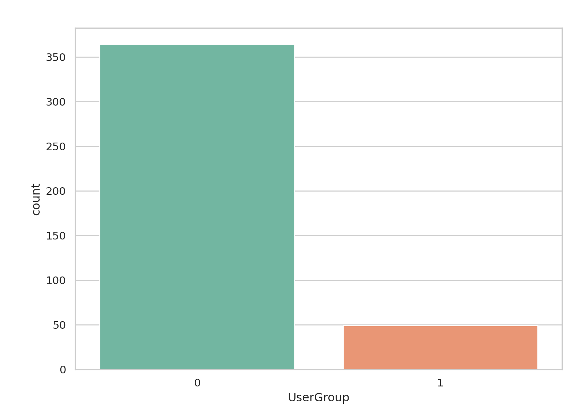
sleep_df['UserGroup'].value_counts()
## 0 364
## 1 49
## Name: UserGroup, dtype: int64print('Distinct users in group 0 (Less Sedentary group)')## Distinct users in group 0 (Less Sedentary group)print(sleep_df[sleep_df['UserGroup']==0]['Id'].nunique())## 14print('Distinct users in group 1 (More Sedentary group)')## Distinct users in group 1 (More Sedentary group)print(sleep_df[sleep_df['UserGroup']==1]['Id'].nunique())## 10Number of rows in each group (in the sleep_df
dataframe):
There is a huge imbalance here: there are 364 records of daily sleep activity for the less sedentary group while only 49 from the more sedentary group.
The total number of distinct users from the less sedentary group is 14 while for the more sedentary group there are only 10 (out of 19 possible ones) distinct users.
Joinning Ativity data with sleep data
join_query = """
SELECT
A.Id,
A.ActivityDate,
A.SedentaryMinutes,
S.TotalMinutesAsleep
FROM
dailyActivity_merged A
INNER JOIN sleepDay_merged S
ON
A.Id = S.Id AND
A.ActivityDate = S.SleepDay;
"""
sns.set(rc={'figure.figsize': (10, 6)})
sns.set_style('whitegrid')
sns.set_palette('Set2')
activity_sleep_df = pd.read_sql(join_query, con)
activity_sleep_df.head()## Id ActivityDate SedentaryMinutes TotalMinutesAsleep
## 0 1503960366 2016-04-12 728 327
## 1 1503960366 2016-04-13 776 384
## 2 1503960366 2016-04-15 726 412
## 3 1503960366 2016-04-16 773 340
## 4 1503960366 2016-04-17 539 700sns.regplot(data = activity_sleep_df,
x = 'TotalMinutesAsleep',
y = 'SedentaryMinutes');
plt.show()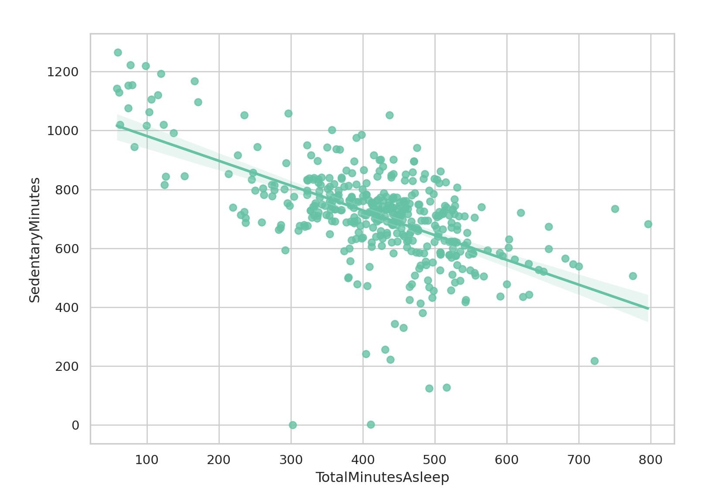
This is an interesting graph: there is a clear tendency of users with more minutes asleep to be less sedentary. So, one conclusion might be that the more you sleep, the more active you are during the day!
🎬Act
From the daily activity of our 33 users, we found some interesting insights that can guide the development of our product!
Firstly, we noticed that there is no clear distinction in user activity across different days of the week. This suggests that any motivation or gamification features of our product should be consistent throughout the week to encourage sustained engagement.
In terms of step count, the average number of steps taken daily is around 7670. According to the Centers for Disease Control and Prevention (CDC), higher daily step counts were associated with lower mortality risk from all causes. If our product can output the number of steps in real-time, we can motivate users to reach a certain number of steps daily. To be specific, taking 8,000 steps per day was associated with a 51% lower risk for all-cause mortality compared with taking 4,000 steps per day, and taking 12,000 steps per day was associated with a 65% lower risk.
Moreover, there is a linear relation between steps taken and calories burned. Our step monitor could use user data to fit a model and predict how many steps a user should take to burn a certain amount of calories. Further investigation into the Metabolic Equivalent of Task (MET) data could be very useful to this.
Lastly, we found that sedentary minutes decrease as the number of minutes asleep increases. This implies that another goal of the product could be to motivate users to keep a consistent and sufficient sleeping schedule. Consistent physical activity has many benefits, including reducing the risk of obesity, heart disease, type 2 diabetes, and some cancers, and on a daily basis, it can help people feel and sleep better.
Overall, these insights provide a solid foundation for the development of our product, and we’re excited to see how we can leverage this information to create a useful and engaging tool for our users!
Thank you so much for reading this Case Study!
I really enjoyed working on this project and learned a lot throughout the process. While there were certainly challenges along the way, I found that the sense of satisfaction I got from overcoming those challenges and seeing the peices come together was incredibly rewarding.
Of course, there’s always room for improvement and I’m already thinking about ways to refine my approach and build on what I learned. But overall, I’m very proud of what I was able to accomplish and grateful for the opportunity to work on this Case Study.
I’m always looking for ways to learn and grow in my field, and I feel like this Case Study was a great step in that direction. Thank you for considering my work, and I look forward to continuing to improve and take on new challenges in the future.
Any feedback would be amazing!